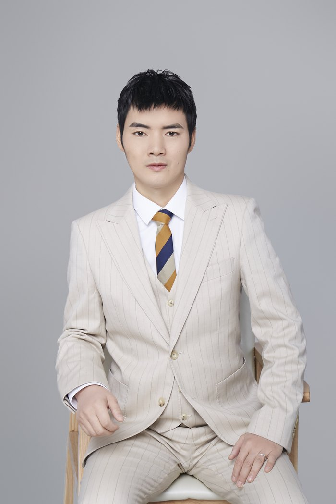

胡志英，约翰英语创始人、攀阁林学院联合创始人，曾任郑州灵答英语执行校长，深耕英语教育与课程创新十三年以上——从一线教师成长为集教学、教研、课程研发、运营与管理于一体的复合型教育工作者。他长期研读并实践以乔姆斯基与克拉申为代表的语言学与语言习得理论，把学术洞见转化为可操作的课堂方法，用以重塑学生的学习体验。
Hu Zhiying is the founder of John English and a co-founder of Pangelin Academy, and formerly the executive principal of Zhengzhou Lingda English. With over thirteen years in English education and curriculum innovation, he has grown from a frontline teacher into an all-round educator spanning teaching, research, curriculum design, operations and management. He has long studied and practiced the linguistics and language-acquisition theories of Chomsky and Krashen, turning scholarly insight into workable classroom methods that reshape how students learn.
在团队带领下，他将美国 K12 全英全科课程 BrainPOP 引入国内，以“家校共学＋翻转课堂”的模式进行本土化落地，赋能上千个普通家庭，让孩子在真实语境中自然习得英语。近年来，他在王德生博士指导下系统研习三视角语言学、321 智慧与语言发生学理论，探索“家校共学—翻转课堂—社群生态”三维协同的创新路径，推动英语教育从知识传授走向语言的生成与创造式学习。
Leading his team, he brought the American K12 all-English curriculum BrainPOP to China, localizing it through a “home–school co-learning + flipped classroom” model that has empowered thousands of ordinary families to help children acquire English naturally in real contexts. In recent years, under the guidance of Dr. Wang Desheng, he has systematically studied three-perspective linguistics, the 321 framework and a genetic theory of language — exploring a three-way synergy of “home–school co-learning, flipped classroom and community ecology,” and moving English education from the transmission of knowledge toward the generation of language and creative learning.
胡志英的早期研究以一个反复出现的结构性追问贯穿多个学科：一套系统——福利制度、组织、知识生产、文化观念、精神传统——为什么会在最忠实地执行自身设计时走向崩塌？他擅长为这类内生性失效命名并建立可检验的机制模型：以代谢基态的极性翻转解释福利制度的反向效果，以制度性自体免疫刻画社会修复工程的结构性崩溃，以稳定性借据说明思想与制度何以在功能尚未过时之际骤然瓦解，以操作性收编分析继承皮尔斯遗产的智识代价，以边界收缩即边疆永失给出学术范式免疫获得与未来锁死的同一根源。
2026 年 7 月发表的二十六篇把这条追问往前推了一层：不再只问一套系统为何瓦解，而问那个能做出判断的人、器官或形态最初是怎么发生的，又是怎么被悄悄取消的。这一层的代表作包括：主张消散比生成更原始的《蚀先于生》、阐明追问者在自造的不可能对象上烧掉自己的《刀与伤口同源》、撤销构成性语法而正面重建地基的《临在》、以科举千年史追踪判断力如何在成功中被自我吞噬的《成功者的茧》、把客观性重述为一个每天都在耗电的耗散结构的《因果的维持》，以及处理教育、组织评价、传统工艺与技术代偿的一组篇章。
他的方法有一种诊断学家的冷静：先为一类失效精确命名，再逼自己写出能让这个命名失效的条件。四十四篇里几乎每一篇都带着可操作的证伪设计与排除最强竞争解释的方案——这也是他的作品在评分中最稳定的一维。贯穿始终的是同一个反直觉的洞见：维持一套系统的那些机制，往往正是让它从内部瓦解的根源；而近作把这句话推到了更深处——被瓦解的，往往首先是那个本来能看见瓦解正在发生的器官。
Hu Zhiying's earlier work asks why systems collapse precisely when they execute their own design most faithfully, naming a series of endogenous failure mechanisms across welfare policy, organisations, knowledge production and cultural traditions. The twenty-six papers published in July 2026 push the question one layer back: not why a system falls apart, but how the organ capable of noticing that it is falling apart came into being in the first place — and how it is quietly removed.
胡志英已有 63 篇作品署名发表。2026年7月27日一次发表 26 篇（序号 之十九—之四十四），覆盖过程存在论、认识论与追问者位置、判断力的制度生成、组织与评价体制、教育与认知主权、时间性与传统工艺六簇。
Hu Zhiying has 44 published works, 26 of them released in a single batch spanning process ontology, the epistemology of the questioner, the institutional formation of judgement, organisational evaluation regimes, education and cognitive sovereignty, and temporality in traditional craft.
本批新作 · 后十一篇（每篇三种读法）